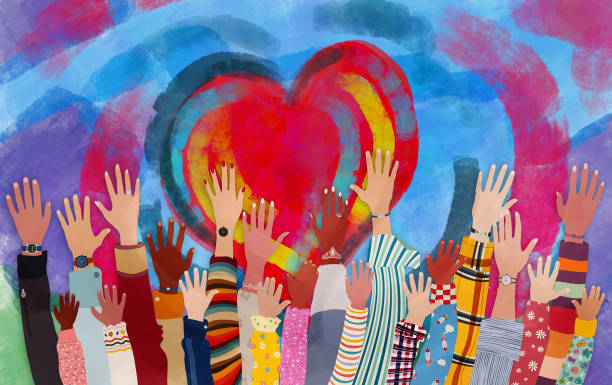

Misyon
Toplumsal cinsiyet eşitliği, kadın hakları ve aile politikaları alanında bilgi üretimini ve farkındalığı artırmak; güvenli bir paylaşım ve öğrenme alanı oluşturmak.

Kadınların, ailelerin ve tüm bireylerin eşit, güvenli ve kapsayıcı bir yaşam alanına sahip olması için bir aradayız.
🌙 Topluluğumuz
Misyonumuz ve yaptıklarımız.
Toplumsal cinsiyet eşitliği, kadın hakları ve aile politikaları alanında bilgi üretimini ve farkındalığı artırmak; güvenli bir paylaşım ve öğrenme alanı oluşturmak.